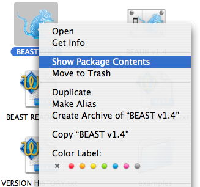
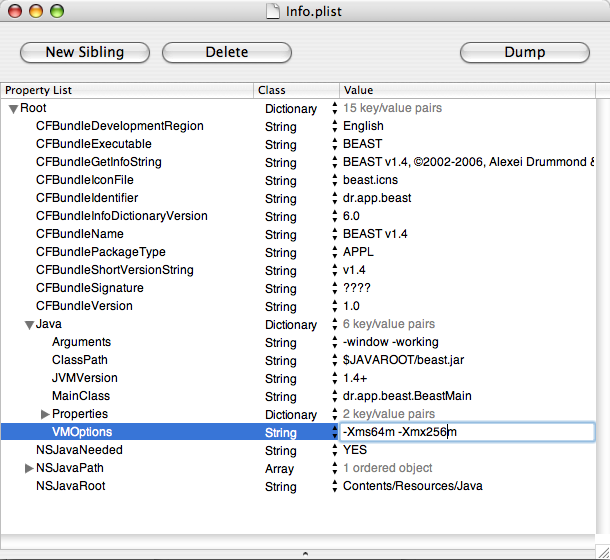

If an application fails to launch with the following error:
"java.lang.OutofMemoryError: Java heap space"The solution is to tell Java to use more memory when loading the program. How this is done depends on which version of the program you are using.

Now go into the folder called “Contents” and find the file called ‘info.plist’. Double-clicking this file should open it in an application called “Property List Editor” (this can be found in your Developer/Applications/Utility folder if it doesn’t open automatically, but you will need to have installed the Developer Tools). In this program open the section called “Java” and edit the string labelled “VMOptions”:

This will have the format: -Xms64M -Xmx256M, where the -Xmx and -Xms commands determine the maximum and starting amount of memory that java is provided (the M after each number specifies that it is in megabytes). You can now increase the -Xmx option to something larger. Then save the “info.plist” file, close the folders and try running the program again.
Note: if you don’t have the ‘Property List Editor’ installed, you can load the ‘info.plist’ into a text editor – find the string that looks like the one above and edit it.
This technique can also be used to increase the memory for the other BEAST-related programs such as LogCombiner, TreeAnnotator and Tracer.
If you are using the command-line version of BEAST on Mac OS X, then see the next section.
A solution to this problem is to run BEAST via the command line using the following command:
{% highlight xml %}java -Xms64m -Xmx256m -jar lib/beast.jar{% endhighlight %}The -Xmx and -Xms commands determine the maximum and starting amount of memory that java is provided (the M after each number specifies that it is in megabytes). Try increasing the -Xmx number to something larger.
In many cases, BEAST and the other programs will be run by calling the executable shell scripts in the BEAST.v1.4/bin directory. If you edit these, you will see a java command similar to the above and you can adjust the memory usage as required.
This is more difficult because the Windows executables are not editable. However the beast.jar files can be found in the BEAST v1.4/lib folder and you can use the command in the UNIX version, above, to run BEAST using the command line: